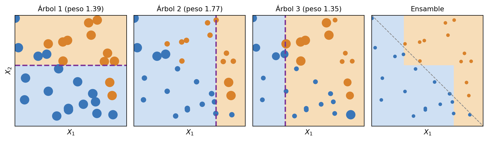
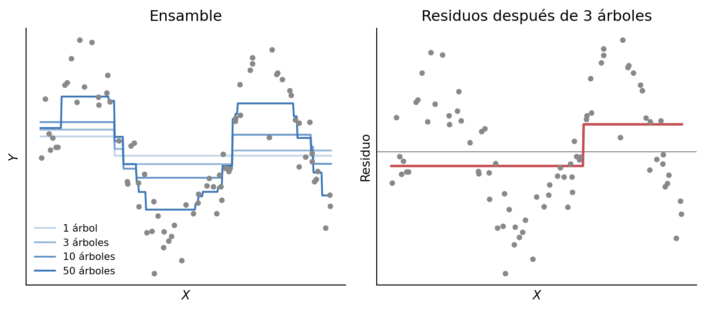

7 Modelos de ensamble
En este capítulo presentamos los modelos de ensamble. Un ensamble es un conjunto de cosas, en general todas similares pero con pequeñas diferencias entre sí. Los modelos de ensamble, entonces, combinan modelos sencillos para obtener un modelo cuyo desempeño suele ser mejor que el de cada modelo individualmente. Hasta ahora, vimos tres tipos de modelos sencillos: árboles de decisión, regresión lineal y regresión logística. Si bien los modelos de ensamble se podrían basar en cualquiera de ellos, los árboles tienen una ventaja que los hace la opción preferida: su complejidad se puede manejar controlando su profundidad, que se convertirá en una característica sumamente importante para la creación de ensambles.
Existen varias técnicas para obtener ensambles; las más utilizadas son bagging y boosting. Las dos sirven tanto para clasificación como para regresión. Vamos a presentarlas a partir de la clasificación y, en cada caso, indicar qué cambia en regresión.
7.1 Bagging
Una forma sencilla de generar un ensamble para clasificación es generar muchos modelos y luego hacerlos votar. En ese caso, la clasificación resultante es la que recibe más votos. Es decir, si nuestro ensamble consiste en 100 árboles de decisión para clasificación, de los cuales 90 predicen la clase A y 10 la clase B, la clasificación resultante es la clase A. Si los modelos predicen pseudoprobabilidades, también se puede hacer una votación ponderada, dándole más peso a aquellos árboles que están más seguros de la etiqueta predicha.
Sin embargo, para que esta idea funcione, necesitamos que los árboles que votan sean diferentes entre sí. Si entrenamos repetidamente árboles con el mismo procedimiento sobre los mismos datos, van a ser todos idénticos, y votar no aporta nada. Entonces, la pregunta es cómo construir un conjunto de árboles diversos, todos con cierto poder predictivo, pero que no sean iguales.
Para lograrlo, se puede recurrir a una técnica estadística conocida como bootstrap. Una muestra bootstrap se obtiene sorteando al azar y con reemplazo \(N\) instancias del conjunto de entrenamiento, que también tiene \(N\) instancias. Como el sorteo es con reemplazo, algunas instancias aparecen repetidas y otras no aparecen: en promedio, cada muestra contiene alrededor del 63 % de las instancias distintas. Repitiendo el procedimiento obtenemos \(B\) muestras, cuya distribución es parecida a la del conjunto original, pero no igual.
En bagging, por cada muestra bootstrap entrenamos un modelo, por ejemplo, un árbol de decisión. Así, obtenemos \(B\) modelos, \(\hat{f}^{*1}, \dots, \hat{f}^{*B}\), donde \(\hat{f}^{*b}\) es el modelo entrenado sobre la muestra \(b\). Son parecidos, pero distintos. Cada modelo —un árbol de decisión, en este caso— vio solo una parte de las instancias, y no vio al resto.
Este ensamble se usa para predecir de manera agregada, votando: para una instancia \(x\), la predicción del ensamble es la clase más votada entre \(\hat{f}^{*1}(x), \dots, \hat{f}^{*B}(x)\), es decir, la moda de las predicciones (Figura 7.1). Esta combinación de bootstrap y agregación (aggregating) es lo que se conoce como bagging, por bootstrap aggregating.
El bagging se puede aplicar sobre cualquier tipo de modelo. Sin embargo, la mayor ganancia se obtiene cuando los modelos son muy flexibles y tienden a sobreajustarse a su muestra de entrenamiento, como los árboles profundos. Cada uno se equivoca de manera distinta, y al votar, esos errores tienden a compensarse.
7.1.1 Pseudoprobabilidades
Además de una clase, muchas veces queremos un valor que indique cuán segura es la predicción. En un árbol de decisión, ese valor es la proporción de instancias de cada clase en la hoja donde cae la instancia. En un ensamble, la forma más sencilla es usar la proporción de árboles que votan por cada clase \(k\):
\[\hat{p}_k(x) = \frac{1}{B} \sum_{b=1}^{B} I\left(\hat{f}^{*b}(x) = k\right)\]
donde \(I(\cdot)\) vale 1 si se cumple la condición y 0 si no. Otra opción es promediar las proporciones de clase que da cada árbol en su hoja, que es la votación ponderada que mencionamos antes, y la opción por defecto en muchas implementaciones. En cualquier caso, el grado de consenso entre los árboles es informativo: no es lo mismo una clase que reciben 501 de 1000 árboles que una que reciben 947 (Skiena 2017).
Estos valores se conocen como pseudoprobabilidades: sirven para ordenar las instancias según la confianza en la predicción, pero no son necesariamente probabilidades calibradas. Es decir, que el ensamble asigne 0.8 a una clase no implica que la predicción sea correcta el 80 % de las veces. Si se necesitan probabilidades, se pueden calibrar.
7.1.2 Random forest
Como mencionamos al principio, los ensambles suelen construirse con árboles de decisión. Un conjunto de árboles de decisión se llama, predeciblemente, bosque (forest). Cuando creamos bosques con bagging, puede ocurrir el siguiente problema. Supongamos un conjunto de datos con 10 atributos, de los cuales dos son muy buenos predictores, otros cuatro son buenos y los cuatro restantes tienen un poder predictivo bajo. Si bien cada árbol ve una muestra bootstrap distinta, los dos mejores atributos van a quedar casi siempre cerca de la raíz. Así, los árboles se parecen mucho entre sí, y el ensamble no aprovecha toda su capacidad.
La solución es volver a recurrir al azar, pero ahora sobre los atributos. Cada vez que un árbol tiene que hacer un corte, no evalúa todos los atributos, sino solo un subconjunto de \(m\) atributos sorteados al azar, sin reemplazo, entre los \(p\) disponibles. El sorteo se repite en cada nodo, así que distintos nodos de un mismo árbol pueden considerar atributos distintos. De esta forma, los mejores predictores no siempre están disponibles cerca de la raíz, y los árboles resultan más diferentes entre sí. Esta combinación de muestras bootstrap y sorteo de atributos en cada corte es lo que se conoce como random forest.
La cantidad de atributos \(m\) que se sortea en cada corte es un hiperparámetro de random forest. Valores habituales son \(m = \sqrt{p}\) para clasificación y \(m = p/3\) para regresión. Un \(m\) chico hace que los árboles sean más distintos entre sí, pero cada uno más débil, porque muchas veces no tiene disponibles los mejores atributos. En el extremo, con \(m = p\) no hay sorteo de atributos, y random forest se reduce a bagging. Los valores habituales son empíricos, así que conviene tomarlos como punto de partida y ajustarlos, por ejemplo, con validación cruzada (Capítulo 4).
Es interesante notar cómo se usa el azar: introduce variabilidad entre los modelos, pero de una manera controlada, de forma tal que el ensamble suele ser mejor que cada modelo individual.
Los modelos de ensamble están entre los más utilizados en la práctica. En particular, random forest —propuesto por Leo Breiman en 2001 (Breiman 2001) y desarrollado junto con Adele Cutler— tiene una larga historia de aplicaciones exitosas, aunque existen modelos más modernos que en algunos problemas lo superan, como los basados en boosting.
7.1.2.1 Error out-of-bag
Como cada árbol se entrena sobre una muestra bootstrap, alrededor de un tercio de las instancias queda afuera de cada árbol. Entonces, para cada instancia podemos obtener una predicción usando solo los árboles que no la vieron, y compararla con su etiqueta. El promedio de esos errores es el error out-of-bag (OOB), una estimación del error en datos nuevos que no requiere separar un conjunto de validación. Sin embargo, si lo usamos para elegir hiperparámetros, se vuelve optimista, igual que la validación cruzada. Por eso, sigue siendo necesario reservar un conjunto de prueba (Capítulo 4).
7.1.2.2 Importancia de atributos
Random forest permite estimar cuán importante es cada atributo para el modelo. La forma más usada es la disminución media de la impureza (MDI, por sus siglas en inglés): para cada atributo, suma cuánto reduce la impureza Gini en todos los cortes en los que se usa, ponderado por la proporción de instancias en cada nodo, y promedia entre los árboles. Hay que usarla con cuidado: se calcula sobre el conjunto de entrenamiento y favorece a los atributos con muchos valores distintos, aunque no sean informativos. Una alternativa es la importancia por permutación, que mide cuánto empeora el desempeño en datos no usados para entrenar cuando se mezclan al azar los valores de un atributo.
7.1.3 Ensambles para regresión
El bagging y el random forest se aplican a regresión con un único cambio: en lugar de votar, se promedian las predicciones de los árboles (Figura 7.1),
\[\hat{f}_{bag}(x) = \frac{1}{B} \sum_{b=1}^{B} \hat{f}^{*b}(x)\]
donde cada árbol de regresión predice el promedio de las instancias de su hoja (Capítulo 2).
Como tenemos \(B\) predicciones para cada instancia, además del promedio podemos calcular su desvío estándar:
\[s(x) = \sqrt{\frac{1}{B - 1} \sum_{b=1}^{B} \left(\hat{f}^{*b}(x) - \hat{f}_{bag}(x)\right)^2}\]
Un \(s(x)\) grande indica que los árboles discrepan mucho entre sí para esa instancia, lo que suele ocurrir en zonas con pocos datos de entrenamiento. Por eso, sirve para identificar en qué instancias la predicción es menos confiable. Pero no es un intervalo de predicción: no incluye el ruido propio de \(Y\), así que no se puede leer como un rango en el que va a caer el valor observado.
7.2 Boosting
En el bagging, los modelos del ensamble se entrenan de manera independiente entre sí. El boosting sigue otra estrategia: entrena los modelos secuencialmente, y cada uno intenta corregir los errores de los anteriores. Los modelos que se combinan son sencillos, típicamente árboles poco profundos, y su desempeño individual suele ser apenas mejor que el de una predicción trivial. A este tipo de modelos se los conoce como modelos débiles (weak learners).
Hay distintas formas de decidir qué tiene que corregir cada modelo nuevo. Vamos a ver las dos más importantes: AdaBoost, que se usa para clasificación, y el gradient boosting, que sirve tanto para clasificación como para regresión.
7.2.1 AdaBoost
AdaBoost, por adaptive boosting (Freund y Schapire 1997), fue la primera versión de boosting de uso extendido. Se usa para clasificación.
Empecemos con una idea sencilla. Entrenamos un árbol de decisión de profundidad uno. Un modelo tan sencillo va a clasificar bien las instancias fáciles, probablemente las que están lejos de la frontera de decisión, pero va a fallar en muchas otras. Ahora, supongamos que sacamos del conjunto de entrenamiento las instancias que este árbol clasificó bien y nos quedamos solo con las que clasificó mal, que son las difíciles. Si entrenamos un segundo árbol de profundidad uno sobre ellas, ese árbol se va a especializar en lo que el primero no pudo resolver.
En la práctica, AdaBoost no saca instancias, sino que le asigna un peso a cada una, que aumenta cuando el árbol anterior la clasifica mal. Así, cada nuevo árbol se entrena prestando más atención a las instancias que los anteriores no resolvieron. Al final, el ensamble combina todos los árboles en una votación ponderada: cada árbol tiene su propio peso, que depende de cuán bien clasificó durante el entrenamiento. Es importante notar que el peso de cada árbol es fijo: no cambia según la instancia que queremos predecir. Lo que cambia con la dificultad de cada instancia son los pesos de las instancias, y solo durante el entrenamiento (Figura 7.2).

Esta estrategia tiene un costo. Como AdaBoost trabaja cada vez más duro para clasificar bien las instancias difíciles, esas instancias terminan teniendo mucha influencia en el modelo (Skiena 2017). Esto es particularmente grave cuando el conjunto de datos tiene instancias mal etiquetadas: el algoritmo aumenta una y otra vez el peso de instancias que, en realidad, no se pueden aprender. Como veremos en la formulación matemática, la causa de fondo es la función de costo que optimiza AdaBoost. Por eso, el problema se mitiga usando funciones de costo más robustas, como las del gradient boosting, y regularizando, por ejemplo, haciendo que cada árbol sume al ensamble solo una fracción de su predicción. Esa fracción es la tasa de aprendizaje, que retomamos en los hiperparámetros.
7.2.1.1 Formulación matemática
Esta sección solamente es parte del programa de Aprendizaje Automático de UNSAM, y su complejidad matemática es un poco mayor a la que venimos teniendo. De todas maneras, su lectura es bienvenida si genera curiosidad.
Para escribir AdaBoost conviene codificar las clases como \(y_i \in \{-1, 1\}\), en lugar de 0 y 1, y llamar \(G_m(x)\) al árbol de la iteración \(m\), que también predice \(-1\) o \(1\). El algoritmo es el siguiente (Hastie et al. 2009):
- Inicializar los pesos de las instancias: \(w_i = 1/N\), para \(i = 1, \dots, N\).
- Para \(m = 1, \dots, M\):
- Entrenar un árbol \(G_m(x)\) usando los pesos \(w_i\).
- Calcular su error ponderado: \(\text{err}_m = \frac{\sum_{i=1}^{N} w_i \, I(y_i \neq G_m(x_i))}{\sum_{i=1}^{N} w_i}\).
- Calcular el peso del árbol: \(\alpha_m = \log\left(\frac{1 - \text{err}_m}{\text{err}_m}\right)\).
- Actualizar los pesos de las instancias: \(w_i \leftarrow w_i \, e^{\alpha_m I(y_i \neq G_m(x_i))}\).
- Predecir con el signo de la suma ponderada: \(G(x) = \operatorname{sign}\left(\sum_{m=1}^{M} \alpha_m G_m(x)\right)\).
Cuanto menor es el error de un árbol, mayor es su peso \(\alpha_m\). Un árbol que acierta la mitad de las veces, como el azar, tiene \(\alpha_m = 0\) y no aporta nada. Los pesos de las instancias mal clasificadas se multiplican por \(e^{\alpha_m}\), y los de las bien clasificadas no cambian.
Se puede mostrar que este algoritmo minimiza, árbol por árbol, la pérdida exponencial (Hastie et al. 2009):
\[L(y, F(x)) = e^{-y F(x)}\]
donde \(F(x)\) es, salvo un factor constante, la suma ponderada \(\sum_{m} \alpha_m G_m(x)\). El producto \(y F(x)\) es positivo si la instancia está bien clasificada y negativo si no, y su valor absoluto crece cuanto más lejos de la frontera está la instancia. Si una instancia está muy mal clasificada, \(y F(x)\) es muy negativo, y la pérdida crece exponencialmente. Por eso, unas pocas instancias mal etiquetadas pueden dominar el entrenamiento.
7.2.2 Gradient boosting
El gradient boosting (Friedman 2001) generaliza la idea del boosting a cualquier función de costo que se pueda derivar, por lo que sirve tanto para regresión como para clasificación. En lugar de usar pesos sobre las instancias, cada árbol nuevo se entrena directamente sobre lo que el ensamble todavía hace mal.
En regresión, la idea es muy intuitiva. El ensamble empieza prediciendo el promedio de \(y\) para todas las instancias. Calculamos los residuos —la diferencia entre el valor observado y el predicho— y entrenamos un primer árbol para que prediga esos residuos. Sumando su predicción, corregimos parte del error. Después calculamos los nuevos residuos, entrenamos un segundo árbol, y así sucesivamente: cada árbol aprende lo que al ensamble todavía le falta explicar. Como cada árbol suma solo una fracción de su predicción, dada por la tasa de aprendizaje, el ensamble se acerca a los datos de a poco (Figura 7.3).

En clasificación, la idea es la misma, con una diferencia. Como en la regresión logística (Capítulo 6), el ensamble no predice directamente una probabilidad, sino un valor real que la función sigmoide convierte en probabilidad. Los árboles se van sumando en ese valor real. Por eso, incluso en clasificación, cada árbol del ensamble es un árbol de regresión.
7.2.2.1 Formulación matemática
Esta sección solamente es parte del programa de Aprendizaje Automático de UNSAM, y su complejidad matemática es un poco mayor a la que venimos teniendo. De todas maneras, su lectura es bienvenida si genera curiosidad.
Llamemos \(F_m(x)\) al ensamble después de \(m\) iteraciones. El ensamble se construye sumando árboles de a uno:
\[F_m(x) = F_{m-1}(x) + \eta \, f_m(x)\]
donde \(f_m\) es el árbol nuevo y \(\eta\) es la tasa de aprendizaje. Cada árbol nuevo se ajusta a los pseudo-residuos, que son el gradiente negativo de la función de costo \(L\) respecto de las predicciones actuales del ensamble:
\[r_i = -\left. \frac{\partial L(y_i, F(x_i))}{\partial F(x_i)} \right|_{F = F_{m-1}}\]
La Tabla 7.1 muestra cómo quedan en los dos casos.
| Regresión | Clasificación binaria | |
|---|---|---|
| Función de costo | \(\frac{1}{2}(y_i - F(x_i))^2\) | Entropía cruzada, con \(\hat{p}_i = \sigma(F(x_i))\) |
| Pseudo-residuos | \(y_i - F_{m-1}(x_i)\) | \(y_i - \hat{p}_i\) |
| Predicción final | \(F_M(x)\) | \(\sigma(F_M(x))\), y la clase según el umbral de 0.5 |
En regresión, los pseudo-residuos son exactamente los residuos. El factor \(\frac{1}{2}\) del error cuadrático es solo por conveniencia: sin él aparece un 2, que se absorbe en la tasa de aprendizaje, como en el Capítulo 3. En clasificación, los pseudo-residuos son la misma expresión que aparece en el gradiente de la regresión logística.
El algoritmo es el siguiente:
- Inicializar \(F_0(x)\) con una constante: el promedio de \(y\) en regresión, o \(\log\left(\frac{\bar{p}}{1 - \bar{p}}\right)\) en clasificación, donde \(\bar{p}\) es la proporción de instancias de la clase positiva. En este último caso, \(\sigma(F_0(x)) = \bar{p}\).
- Para \(m = 1, \dots, M\):
- Calcular los pseudo-residuos \(r_i\) de cada instancia.
- Entrenar un árbol de regresión \(f_m\) sobre los pares \((x_i, r_i)\).
- Actualizar el ensamble: \(F_m(x) = F_{m-1}(x) + \eta \, f_m(x)\).
- Predecir con \(F_M(x)\) en regresión, o con \(\sigma(F_M(x))\) en clasificación.
Simplificamos un detalle: en la versión completa del algoritmo, después de entrenar cada árbol se recalculan los valores de sus hojas para minimizar directamente la función de costo. Con el error cuadrático, eso no cambia nada.
El nombre viene de que es un descenso por gradiente, como el del Capítulo 3, pero con una diferencia importante. Allí, en cada paso movíamos los parámetros \(\beta\) en la dirección contraria al gradiente. Acá, en cambio, lo que movemos son las predicciones del ensamble, y cada árbol nuevo aproxima la dirección en la que conviene moverlas.
7.2.2.2 XGBoost y otras implementaciones
XGBoost (eXtreme Gradient Boosting) (Chen y Guestrin 2016) es una implementación muy optimizada de gradient boosting. Entre otras cosas, agrega regularización a la función de costo, sortea instancias y atributos en cada iteración y paraleliza la construcción de cada árbol. Aunque los árboles se entrenan en secuencia, la búsqueda de los cortes dentro de cada árbol sí se puede repartir entre varios procesadores. Junto con otras implementaciones, como LightGBM y CatBoost, está entre los modelos con mejor desempeño en datos tabulares, y se usa tanto para clasificación como para regresión.
7.2.3 Hiperparámetros
El boosting tiene tres hiperparámetros principales (James et al. 2013):
- La cantidad de árboles. A diferencia del bagging, el boosting puede sobreajustar si se usan demasiados árboles, aunque ese sobreajuste suele aparecer lentamente. Por eso, conviene elegirla con validación cruzada (Capítulo 4).
- La tasa de aprendizaje, \(\eta\) (o shrinkage). Cada árbol suma al ensamble solo una fracción \(\eta\) de su predicción, de forma tal que el ensamble aprende más despacio. Valores típicos son 0.1, 0.01 o incluso 0.001. Existe un compromiso con la cantidad de árboles: cuanto más chica la tasa de aprendizaje, más árboles hacen falta.
- La profundidad de los árboles. Los árboles son poco profundos. Muchas veces, árboles de profundidad uno funcionan bien, pero en gradient boosting son habituales árboles algo más grandes, de entre 4 y 8 hojas (Hastie et al. 2009).
7.2.4 Diferencias con bagging
Veamos cómo se compara el boosting con el bagging:
- Entrenamiento. En bagging, los árboles se entrenan de manera independiente; en boosting, en secuencia, porque cada uno depende de los errores de los anteriores. Esto tiene una consecuencia computacional: en bagging podemos entrenar todos los árboles a la vez, en paralelo, mientras que en boosting cada árbol tiene que esperar a que termine el anterior.
- Cómo se generan modelos distintos. El bagging entrena cada árbol sobre una muestra bootstrap distinta. En el boosting, cada árbol se entrena sobre lo que los anteriores hicieron mal: AdaBoost lo logra con pesos sobre las instancias, y el gradient boosting, ajustándose a los pseudo-residuos.
- Profundidad de los árboles. En bagging, los árboles suelen ser profundos y sobreajustarse a su muestra; el ensamble compensa sus errores al votar. En boosting, los árboles son poco profundos; cada uno aporta una mejora pequeña y el ensamble mejora de a poco, árbol a árbol.
- Combinación. En bagging, todos los árboles pesan lo mismo: se toma la moda en clasificación y el promedio en regresión. En boosting, la predicción es una suma de los árboles: ponderada por el peso de cada árbol en AdaBoost, y escalada por la tasa de aprendizaje en el gradient boosting.
Y, al igual que el bagging, el boosting se puede aplicar sobre otros modelos, aunque los árboles son la opción más utilizada.